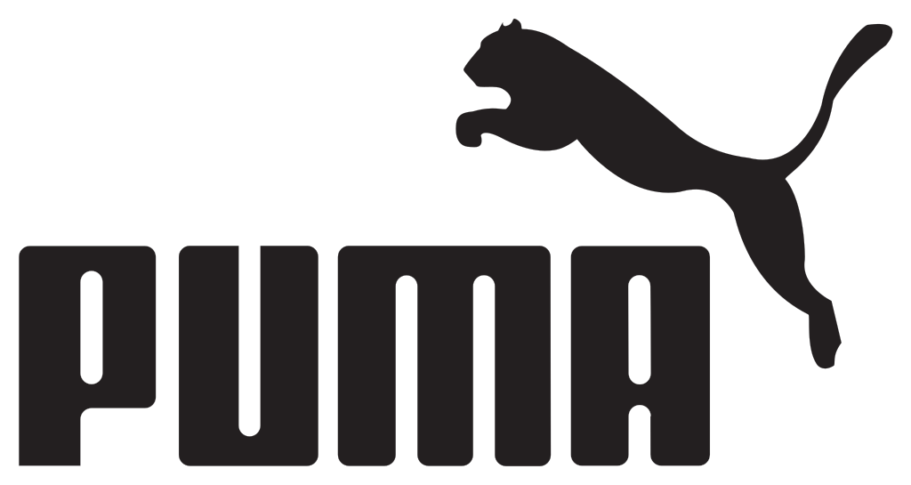

1924년 독일 뉘른베르크 근교의 헤르초게나우라흐에서 아돌프 다슬러(Adolf Dassler)와 루돌프 다슬러(Rudolf Dassler) 형제가 신발을 만들어 판 것이 기업의 모태가 되었다. 제2차 세계 대전 종전 후 1948년 아돌프의 형 루돌프는 독립해 경쟁 회사인 푸마를 창업하였고, 1949년 8월 18일 아돌프는 애칭인 아디(Adi)와 다슬러(Dassler)를 합하여 아디다스라는 이름을 짓고 상표 등록을 했다. 1976년부터 S.P.A 기술을, 1982년 푸마 듀오플렉스 솔(Puma Duoflex sole)'을 개발했는데, 1999년에 캘리포니아의 산타모니카에, 2001년에 샌프란시스코, 뉴욕에 '컨셉 스토어(Concept Store)'를 열었다. 2002년에는 컨셉 스토어를 런던, 로마, 도쿄, 밀라노, 프랑크푸르트, 시애틀, 멜버른 등으로 확대해 나갔고 남성 정장 라인 '96 아워스(96 Hours)'를 런칭했다. 2003년에 모나키-레전시가 푸마의 주식을 분산 매각했다. 2005년에 '마이파이어 페어뫼겐페어발퉁스게젤샤프트(Mayfair Vermogensverwaltungsgesellschaft mbH)'가 푸마 주식 16.91%를 인수했다. 2006년에 인도 두바이에 자회사를 설립했다. 2007년 4월에 구찌, 발렌시아가 등의 명품 브랜드를 소유하고 있는 프랑스의 PPR(Pinault-Printemps-Redoute)' 그룹이 푸마 주식의 27%를 인수했고 2007년 7월 17일에 추가로 인수하여 현재 PPR은 푸마 주식 62.1%를 소유하고 있다. 푸마는 2012년 이후 매출과 이익 감소를 겪으면서, 2013년 회사의 새로운 브랜드 포지셔닝을 발표했다. “영원히 빠른”, “세계에서 가장 빠른 스포츠 브랜드”라는 문구를 내걸으며 골프, 모터 스포츠, 축구 등 스포츠 카테고리에 더 초점을 맞추고 있다.[1] 푸마 제품은 현재 세계 80여 개국에 수출하고 있으며 패션, 축구용품, 모터 스포츠용품, 골프용품, 선글라스, 향수 등의 제품을 생산하고 있다. 푸마는 블랙라벨, 후세인살라얀 등으로 스페셜에디션을 출시하여 매니아적 성향을 늘려가고 있다.
